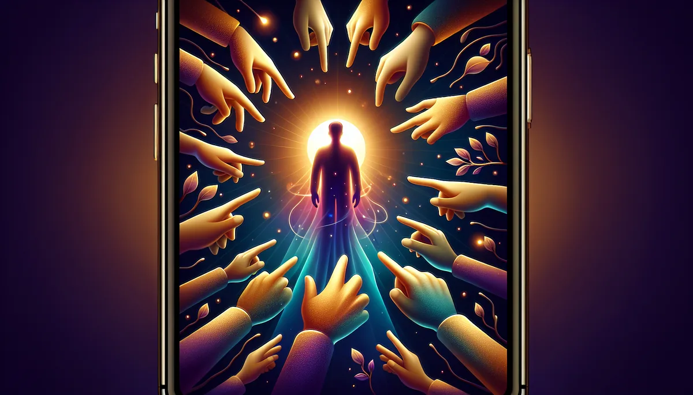

PEOPLE PLEASER INDEX
🎭
你為了別人開心，犧牲了多少自己？
有一種累，不是身體的。是你笑了一整天回到家，臉部肌肉痠到不行，才發現自己一天沒有為自己笑過一次。你的善良有沒有正在吃掉你？
20 題情境投射，看見你的討好模式。
🎭 20 題 · 約 5 分鐘 · 12 種討好模式 · 馥靈之鑰獨家
第 1 題
0%
看看我的討好模式 🎭
📥 儲存圖片
🧵 分享到 Threads
📋 複製結果
💬 分享到 LINE
🔄 重新測一次
✨ 更多覺察測驗
🗣️
內在聲音
🌑
影子人格
🚧
界線體質
💛
自我疼惜